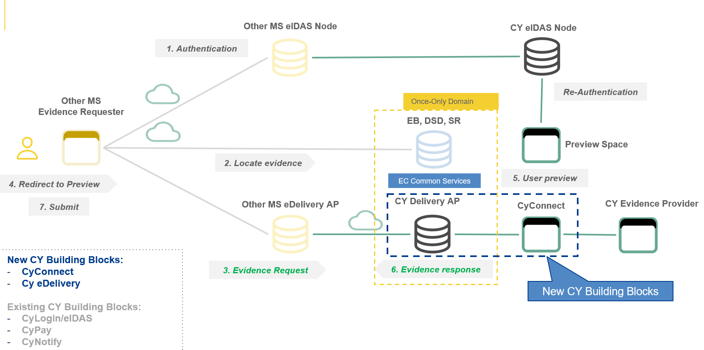

Evidence Provider
Evidence Provider (EP) Integration

Scope of work for Evidence Providers
- Implement Backend SOAP Web Service to receive notifications from eDelivery Access Point
- Implement SOAP Client to submit Responses to and retrieve Requests from the AP
- Integration with eIDAS to re-authenticate user
- Implement Preview Space for user to confirm the exchange of evidence (if applicable)
- Collaborate with relevant ERs from other MS to Test
Prerequisites
- Initiate the SDG/OOTS Integration process as an Evidence Provider according to the legal SDG framework
- Discovery and readiness assessment
- Register as an Evidence Provider in the Common Services Admin GUI (in cooperation with the evidence mapping team)
- eDelivery Access Point Account: Send requests and receive responses from AP
- OOTS Integration API key: Validate messages (if applicable)
- Central Backend Service Account: integration with the national eDelivery AP (if applicable). Evidence providers have the option to implement a self-managed backend service to interact with the eDelivery system. In this case, EPs could follow the Playbook for Evidence Provider
- CyConnect: configuration of the ER SOAP Web Service on the CyConnect API Gateway to receive notifications from AP
- CyLogin/eIDAS Account: Authenticate users (if applicable)
- CyNotify Account: Send email and SMS notifications (if applicable)
{kind=link}